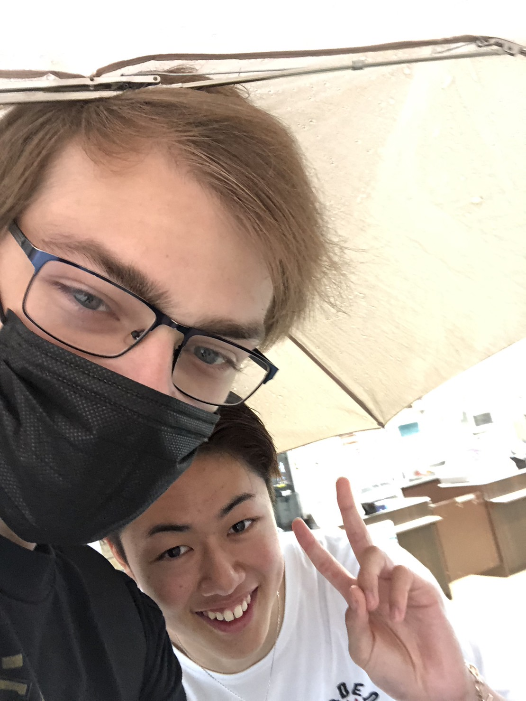

Adam Omundsen
Senior at elizabethtown college majoring in Computer Science and Japanese.
Hobbies include playing video games, coding, and reading manga.

Current Classes:
- JA 411: Fourth Year Japanese
- JA 496: Japanese Research Project
- CS 310: Web Development
- CS 341: Computer Networking
Programming Experience
- 2019 - 2023
- Recreated a large Minecraft minigame with my sister using footage alone, resulting in 60+ classes and over 350KB of code
- Fall 2022
- Worked with professor Li to investigate methods of malware detection in packets using python ML
- Fall 2022
- Worked in a group of four people to create a database interface system for a client on campus
Work Experience
- July 2019 - August 2020
- Worked at the Long Community at Highland as a dietary aide
- May 2021 - December 2022
- Worked at the Mars Wrigley Confectionery in Elizabethtown as a packaging associate